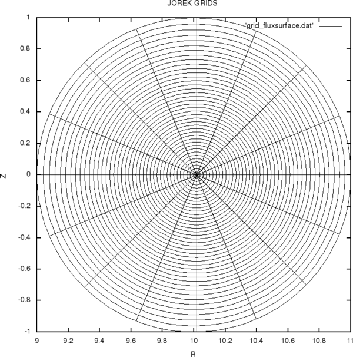
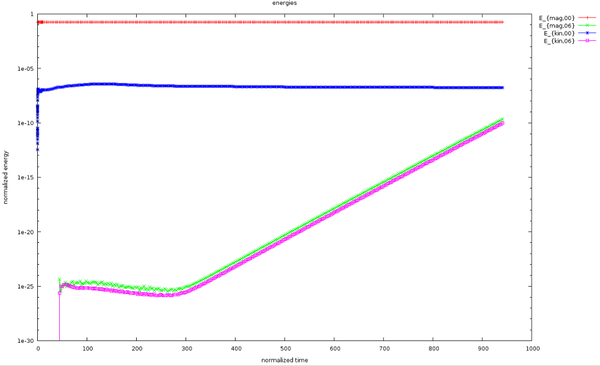
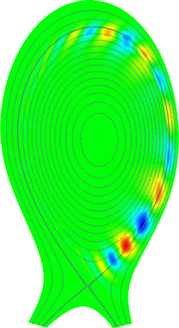

This tutorial will show you how to run your first small JOREK simulation(s). It will help you configure and compile libraries, the main code, and diagnostics, and run interactively or via a batch system. You will also learn how to use a few simple diagnostics. Basic Linux knowledge is required, and you should have access to a batch Linux cluster to run the examples yourself.
Getting and keeping the overview
- The code documentation is done in our Wiki system. Take some time to look through the items linked from the main page. The documentation is neither complete nor perfect, and the whole community has to continuously work on it.
- Important information is normally announced via our mailing list everyone@jorek.eu.
- Our public website is hosted on a virtual server under our control. There is also a restricted Wiki on jorek.eu for organizing meetings etc.
Preparation of the environment
We assume in the following that you are using the bash shell.
On most machines it is possible to load modules to make additional software available. We recommend doing this directly in your .bashrc file in the home directory. Put something like the following there; module names might differ between machines.
module load intel ...
For machines used regularly by our community, you can find the names of modules (and much more) here: here.
If you add it to the .bashrc file, it will become active after you have logged out and back in again, you opened a new terminal, or you do source ~/.bashrc manually.
Other useful commands: use module avail to check for available modules, module list to see what you have already loaded, module unload to unload, and module show to look at details.
Configuring and compiling
If you want to only use the code for your physics studies without (relevant) changes, you can clone the source code repository without an account:
cd <where you want to check out the code>
git clone https://github.com/<REPOSITORY>
In case you would like to do developments yourself on the code, it is better to clone the repository via ssh. This requires you to register on GutHub, set up an ssh keypair and upload your public ssh key to GitHub. After doing that, you can clone as follows:
cd <where you want to check out the code>
git clone git@github.com:<REPOSITORY>
After cloning the repository now, you have a local copy of the JOREK source code. Next is to compile this source code to obtain the executable binary for the desired model, as well as for required diagnostics programs. These binaries are what you will later copy into your run directory and use to run and analyze the simulation. To achieve this, the main steps are:
- prepare the
Makefile.incfile, which contains machine specific information - set hard-coded parameters, e.g., the selection of the physics model using
./util/config.sh - run
make cleanwhen you have changed the configuration or hard-coded parameters - compile the code with, for example,
make -j 8
These steps are described in more detail in the following.
First, you need to prepare the Makefile.inc configuration file that contains information regarding which compiler to use, where to find libraries (in case of a new computing system, you might need to compile some of the libraries yourself; this goes beyond this tutorial), etc.. This file needs to be adapted for the respective computing system you are using. For computing systems that are in frequent use by the community, you can find the files at here. The Makefile.inc needs to be placed into the main folder of the repository you cloned, where you also find jorek2_main.f90.
Before compiling the code, you need to set a few hard-coded parameters. The most important ones are:
| name | description | reasonable values |
|---|---|---|
model | physics model (see here for a basic overview) | 600, … |
n_tor | number of toroidal harmonics (counting sine and cosine separately) | 1, 3, 5, 7, 9, … |
n_period | toroidal periodicity | 1, 2, 3, 4, … |
n_plane | number of toroidal planes for real-space representation | at least 2*(n_tor-1) |
A few examples of toroidal harmonics included in a simulation depending on the hard-coded parameter settings:
n_tor | n_period | Toroidal mode numbers n included |
|---|---|---|
| 1 | 1 | 0 |
| 3 | 1 | 0, 1 |
| 5 | 1 | 0, 1, 2 |
| 17 | 1 | 0, 1, 2, 3, 4, 5, 6, 7, 8 |
| 3 | 6 | 0, 6 |
| 5 | 3 | 0, 3, 6 |
The best way to change these hard-coded settings is via the bash script:
./util/config.sh
(The model is set directly in Makefile.inc, and the other hard-coded parameters are in models/mod_settings and models/modelXXX/model_settings.)
The script also lists a few additional hard-coded parameters that are not mentioned above:
==============================
model600
------------------------------
n_tor = 3
n_coord_tor = 1
l_pol_domm = 0
n_period = 6
n_coord_period = 1
n_plane = 4
n_order = 3
n_nodes_max = 60001
n_elements_max = 60001
n_boundary_max = 1001
n_pieces_max = 6001
------------------------------
with_vpar = .true.
with_TiTe = .false.
with_neutrals = .false.
with_impurities = .false.
==============================
('config.sh -h' for help)
When you have set the hard-coded parameters to the desired values, you can compile the main code with:
make -j 8
This uses optimized settings and compiles up to eight source files in parallel (choose the number as appropriate) if possible. The compilation usually takes a few minutes, depending mostly on the file system. JOREK also has a set of prepared diagnostics that you can compile with:
make -j 8 <diagnostic-name>
The diagnostics used in this tutorial are:
| name | description |
|---|---|
jorek2vtk | Translate restart files into VTK files for plotting with Visit or Paraview |
jorek2_postproc | Multi-purpose diagnostics with simple script language |
Debugging options
When you need debugging options, for example during code development, you can compile with make clean; make -j 8 DEBUG=1. This adds compiler checks during runtime, but makes the code slower. When changing between optimized and debugging builds, or when changing hard-coded parameters, always do a make clean before compiling again.
Exercises
- Exercise 1: Log into the compute cluster you have available, clone the code, load the modules as needed, put the correct
Makefile.incinto place, set the hard-coded parameters as./util/config.sh model=600with the script, and compile the main code as well as thejorek2vtkandjorek2_postprocdiagnostics. If that works for you, you have already successfully compiled. Great!
Running a simple test case
In this tutorial we run a very simple test case: a tearing mode in a large aspect-ratio circular plasma. You need to structure directories for your simulations yourself. For this tutorial we assume the following directory structure with the source code and Makefile.inc prepared, for example in your Marconi home folder:
first-jorek-runs/
jorek.git/ # the source code
intear_ntor3/ # run directory
First, compile the code with appropriate settings for the test case:
cd jorek.git/
./util/config.sh model=600 with_vpar=.false. n_tor=3 n_period=1 n_plane=4 # run with toroidal mode numbers n=0,1
make clean
make cleanall
make -j 8
make -j 8 jorek2vtk jorek2_postproc
Then copy the compiled binaries and the input file for the test case into the run directory. The input file intear contains the information necessary to run the test case; more information about the namelist input files is given further below.
cp jorek_model600 jorek2vtk jorek2_postproc namelist/model199/intear ../intear_ntor3
cd ../intear_ntor3
ln -s ../jorek.git/util # create a soft link to the util folder with scripts for convenience
Now open the file intear with your favorite editor. It contains the description of the test case to be simulated. Many things will not immediately be self-explanatory. For now, only change the time-stepping settings to:
tstep = 3000.
nstep = 50
Running interactively
On a machine where you can run a small case like this interactively (not possible on all systems), you can directly do something like the following (details depend on the machine):
export OMP_NUM_THREADS=4
nice mpirun -n 2 ./jorek_model199 < ./intear | tee logfile
JOREK uses a hybrid MPI + OpenMP parallelization. The total number of CPU cores used is the product of the MPI tasks and the OpenMP threads. The first line sets the number of OpenMP threads to four. mpirun -n 2 means that we are running two MPI tasks, one per toroidal harmonic. Thus, this example uses eight CPU cores. The number of MPI tasks should usually be a multiple of the number of toroidal n harmonics:
n_MPI = k * (n_tor+1)/2
The nice command reduces the priority of the run slightly so as not to affect other interactive users on the same machine. The top command can be used to see how much an interactive machine is presently in use, and it is worth checking.
We pipe the namelist input file intear into the code so it can read the case specification. The | tee logfile at the end means that all output of the code will be printed to the screen and also written into a file called logfile so you can inspect details later.
Running in a batch queue
Usually, production simulations are prepared as follows. You compile the code, prepare the JOREK input file, and set up a specific batch job file. In this file, you specify what should be executed exactly and on what hardware. You "submit" this job and the job scheduler will run it once the required hardware becomes available. This is the usual way of running simulations on large systems. Waiting times can depend a lot on the size of the job, the amount of resources you used already, on the size of the project you have on the system, and other parameters.
For example jobscript files, see the pages for different computing systems.
When you have your jobfile prepared, you can submit it as follows (for computing systems that use the SLURM scheduler):
sbatch jobscript
After submission, you can check the status of your job with:
squeue -u <your-username>
If you need to "kill" a job, you can do this with:
scancel <jobid>
Alternatively, you can also tell JOREK to end itself in a clean way after the next time step by creating a special file STOP_NOW in the run folder:
touch STOP_NOW
This works both interactively and in a batch system and is especially useful if you do not write out every restart file. A clean exit of the code will always produce a jorek_restart.h5 after the last time step, while simply killing the run (Ctrl-C, kill -9 PID, or scancel in the batch system) will lead to an abrupt stop and you may lose a few time steps.
Restarting a simulation
Restarting a JOREK simulation is easy. If the simulation exited cleanly, you can simply restart it by setting restart=.true. in the namelist input file (called intear in this example) and submitting the job script again. This allows, for example, continuing a simulation with a different time step, or simply continuing it. The simulation is restarted from the state stored in jorek_restart.h5.
If the simulation did not finish cleanly, or if you want to restart from a different time step than the very last one, you need to copy one of the numbered restart files jorekXXXXXX.h5 to jorek_restart.h5. JOREK writes a numbered restart file every nout time steps (to be precise, it writes out a restart file whenever modulo(step,nout)==0), where nout can be specified in the namelist input file. Most diagnostics also read their data from the restart files.
Note that the JOREK restart file number is really just an index. The simulation time corresponding to the index depends on the time stepping you choose in your simulation. You can check this correspondence via the following command to get the time in normalized units:
./util/plot_live_data.sh -q time
For time in SI units, use the following command instead: ./util/plot_live_data.sh -q time -si
Namelist input parameters
The example input file intear contains only a limited number of input parameters. Many more exist. It is best to look at the namelist defined in the respective model (models/modelXXX/initialise_parameters.f90) to see which input parameters can be used. Normally, all of them get default values before the namelist input file is read, and the value actually used is printed to the logfile.
Most input variables are defined in models/phys_module.f90 with a short comment. At first, it is advisable to search for help from more experienced JOREK users to find out which input parameters are relevant for your case. For their exact meaning, it is often best to look directly into the code where they are used. Some important ones from the present example are:
| Parameter | Description |
|---|---|
restart | Run a simulation from scratch or restart it |
tstep | How large each time step should be, in normalized units |
nstep | How many time steps to run |
tstep_n | Same as tstep, but allows several different values to be used successively |
nstep_n | Same as nstep, but allows several different values to be used successively |
nout | Write a restart file every nout time steps |
F0 | Defines the toroidal field strength: (B_\phi = F_0 / R) |
n_radial, n_pol | Resolution of initial grid |
n_flux, n_tht | Resolution of flux surface aligned grid |
eta | Resistivity |
visco | Viscosity |
eta_num | Hyperresistivity for numerical stabilisation |
visco_num | Hyperviscosity for numerical stabilisation |
D_perp | Particle diffusivity |
ZK_par | Parallel heat diffusivity |
ZK_perp | Perpendicular heat diffusivity |
FF_* | FF' profile as function of (\Psi_N) by coefficients of an analytical expression |
T_* | Temperature profile as function of (\Psi_N) by coefficients |
rho_* | Density profile as function of (\Psi_N) by coefficients |
| … | … |
For the full list of JOREK input parameters, please refer to the complete list of namelist inputs. For some parameters, it is possible to provide numerical profiles instead. This is described in the end of the tutorial.
Input parameters can also be manipulated via ./util/setinput.sh, which is particularly helpful in scripts. For example, to switch an input file to restarting:
./util/setinput.sh intear restart=.t.
Analyzing the simulation
We have a separate tutorial on JOREK diagnostics, but here is a rough overview so you can inspect a few aspects of the simulations.
Logfile
The logfile contains a huge amount of information and may not be easy to read for a new user. A few things to look for are:
- At the beginning of the logfile, you find the hard-coded parameters and all input parameters used for the simulation. All input parameters have default values, which can be modified by the namelist input file (
intearin this case). The logfile shows which values were actually used. This can be very helpful to spot problems. - The logfile then contains information about the construction of an initial grid and the iterative calculation of the equilibrium, solving the Grad-Shafranov equation. This part can be relatively long depending on the case and should end with
Fixed boundary equilibrium converged: after XXX iterations. - Usually, a flux-surface aligned grid is then constructed and the equilibrium is calculated again for numerical accuracy.
- Then the time evolution starts, with every time step marked by something like:
**
* time step : 1 1 1 3000.00000 *
**
- The line
Number of iterations (info(2)): XXXis important. If the iterations needed to converge in a time step become too many, the simulation may become slow or stop converging. In such a case, stopping the code and restarting it with smaller time steps can be useful. - The line
min,max deltasis also important. These are the largest changes in the finite element coefficients in the previous time step. If these values become very large, it often signals a numerical problem. - The line
Elapsed time ITERATIONshows how many seconds each time step took. - You can check for these lines with:
egrep -i 'info\(2|time iterat|time step :|min,max deltas' logfile
Grids
You can visualize your simulation grids, both the initial one and the flux-surface aligned one:
./util/plot_grids.sh
You can also plot the grids separately, print to a postscript file, and so on:
./util/plot_grids.sh -h # print usage information
./util/plot_grids.sh -o in # plot initial grid
./util/plot_grids.sh -o fl # plot flux surface aligned grid
./util/plot_grids.sh -o x # plot an X-point
An example for ./util/plot_grids.sh -o fl output for the intear test case:

Energies
You can inspect the evolution of magnetic and kinetic energies in the individual toroidal harmonics by typing:
./util/plot_live_data.sh
An example for ./util/plot_live_data.sh output for the intear test case:

Pressing u should update the plot while your simulation is running. You can zoom in with the right mouse button and switch between logarithmic and normal y-axis with l. There are more quantities available for plotting:
./util/plot_live_data.sh -h # print usage information
./util/plot_live_data.sh -l # list all plottable quantities
./util/plot_live_data.sh -q gr # plot growth rates instead of energies
The script extracts information from macroscopic_vars.dat, for example into energies.dat, and plots the result using gnuplot.
VTK files
Simulations write out a restart file every nout time steps. The tool jorek2vtk can translate restart files into VTK files suitable for plotting with tools like VisIt or Paraview (usually module load visit or module load paraview). This can be done by:
./util/convert2vtk.sh -j 8 jorek2vtk intear
./util/convert2vtk.sh -no0 -j 8 jorek2vtk intear
./util/convert2vtk.sh -si -j 8 jorek2vtk intear
This converts all or selected restart files to VTK files in a subfolder such as vtk_iplane1/. The -h option prints usage information. It is possible to exclude the axisymmetric component from the VTK files by adding -no0. With -si we can plot without normalized units.
Without using the convert2vtk.sh script (not recommended), you would instead do the following:
cp jorekXXXXX.h5 jorek_restart.h5
./jorek2vtk < ./intear
and then plot jorek_tmp.vtk.
An example for a VTK plot for the intear test case (perturbation of the current density created using the -no0 option):

jorek2_postproc
The tool jorek2_postproc allows quick analysis of many aspects of a simulation. You can run it interactively by calling:
./jorek2_postproc
Then type the commands you want to execute. help lists all available commands, and help <command> explains the detailed usage of a particular command, expressions shows you what expressions you can use for your analysis etc. Another option is to create a small script with the commands you want to execute and then run:
./jorek2_postproc < ./script
All results are written into a postproc/ subfolder.
A more detailed explanation is given in the JOREK diagnostics tutorial.
Other potentially useful files
jorek2.pscontains useful information about the simulation.qprofile.datcontains the safety factor profile as a function of (\Psi_N); do not be distracted by a few possible artifacts there.
Exercises
- Exercise 2: Run the described case, plot the grid, the energies, the growth rates, the input profiles, and the mode structure (VTK files with
no0). How does the mode structure evolve during the simulation? - Exercise 3: Run the same case with different settings for resistivity or viscosity and see how the linear growth rate changes. Is the growth rate affected when you modify the grid resolution or numerical parameters like the hyperviscosity or hyperresistivity (
visco_num/eta_num)? You can also changeF0to modify the toroidal field strength and shift the q-profile. Feel free to experiment. The result (mode growth rate) of a resistivity scan with the baseline resolution andF0formodel199withn_tor=2is shown in the original tutorial. - Exercise 4: Run the same case with toroidal mode numbers
n=0,1,2and compare the results to the previousn=0,1simulation, for example using VTKno0and energies. Note that you need to change hard-coded parameters and the job script file. - Exercise 5: How does the batch script need to be adapted if you want to run the case of Exercise 4 on 1, 3, or 6 compute nodes? Is such a small case running faster if you use more compute nodes? You can also change the number of OpenMP threads while always running on three compute nodes to see the effect.
Becoming more realistic: A peeling-ballooning mode in an X-point plasma
For more realistic simulations, we include also the parallel velocity (along magnetic field lines) in the simulations. This is a switch to model600. So now we use model600 with with_vpar=.true.. Running this model usually requires starting first with axisymmetric settings (n_tor=1) before restarting with n_tor>1. This requires compiling the code twice with different hard-coded parameter settings. In many cases, starting the axisymmetric part of the run with small time steps and increasing them successively is advisable, as in the example below.
Prepare and compile
cd jorek.git/
mkdir ../inxflow_nper6 # create run folder
cp namelist/model303/inxflow ../inxflow_nper6 # copy example input file to the run folder
# --- compile axisymmetric binary
./util/config.sh model=600 with_vpar=.true. n_tor=1 n_period=1 n_plane=1 # run with toroidal mode numbers n=0
make clean
make -j 8
cp jorek_model600 ../inxflow_nper6/jorek_model600_ntor1
# --- compile non-axisymmetric binary and diagnostics
./util/config.sh model=600 with_vpar=.true. n_tor=3 n_period=6 n_plane=4 # run with toroidal mode numbers n=0,6
make clean
make -j 8
make -j 8 jorek2vtk jorek2_postproc
cp jorek_model600 jorek2vtk jorek2_postproc ../inxflow_nper6
cd ../inxflow_nper6
ln -s ../jorek.git/util # create link to util/
Run
The following can be run interactively for tests again, but is best done via batch scripts of courese:
# --- First axisymmetric for a few successively increasing time steps:
./util/setinput.sh inxflow tstep_n=1.d-3,1.d-2,1.d-1,1.d0,3.d0 nstep_n=10,10,10,10,10 restart=.f. nout=5
export OMP_NUM_THREADS=8
nice mpirun -n 1 ./jorek_model600_ntor1 < ./inxflow | tee logfile
# --- Then run non-axisymmetrically to study the instability:
./util/setinput.sh inxflow tstep_n=3.d0 nstep_n=500 restart=.t.
export OMP_NUM_THREADS=8
nice mpirun -n 2 ./jorek_model600 < ./inxflow | tee -a logfile
Blanks are not allowed when setting variables via setinput.sh. You can obviously change the input file (called inxflow here) also by hand.
An example for the energies plot and the mode structure for the inxflow test case:


Model extensions
Various extensions are available for model600, a few examples are:
- Two fluid; need links
- Diamagnetic drift effects and neoclassical flows; need links
- Free boundary and resistive walls; need links
- …
Exercises
- Exercise 6: Run the case yourself, plot the initial and flux-surface aligned grid, energies, growth rates, VTKs, and so on. What is the approximate poloidal mode number of the instability? What is the value of the resistivity in (\Omega m) at the mode location (see normalization)?
- Exercise 7: Try to continue the simulation further into the non-linear phase by restarting with a smaller time step. If you restart in the linear phase with a different time step, does the growth rate change?
- Exercise 8: Try to run the same case with diamagnetic drift effects by including
tauICin the namelist input file and see how the growth rate and mode structure changes.
Numerical input profiles
Usually, when you want to run experiment-relevant cases, it is not sufficient to provide input profiles for temperature, etc. via coefficients to analytical functions. For this purpose, it is possible to provide ASCII files for many purposes instead. In such a file, the first column needs to be the normalized poloidal flux (\Psi_N) as radial coordinate, and the second column needs to contain the respective quantity. Comments starting with # are allowed. For example:
# Psi_N D_perp
0. 1.1e-7
0.1 1.003e-7
...
To use this functionality, set the file names correctly for the following namelist input parameters:
| parameter | explanation | alternative via coefficients |
|---|---|---|
D_perp_file | Particle diffusivity | D_perp |
ZK_perp_file | Perpendicular heat diffusivity | ZK_perp |
rho_file | Density profile | rho_0, rho_1, rho_coeff |
T_file | Temperature profile | T_0, T_1, T_coeff |
FFprime_file | FF' profile for Grad-Shafranov | FF_0, FF_1, FF_coeff |
A few more exist for some code extensions.
Note:
- For JOREK X-point simulations, you need to provide the profiles up to (\Psi_N > 1).
- The FF', density, and temperature profiles need to be smooth. Make sure the first numerical derivative is also smooth and has no jumps.
- Use sufficient resolution so the derivatives can be calculated numerically in a reasonable way.
- It is usually a good idea to check via
./util/plot_live_data.sh -q inpthat the input parameters actually used correspond to the ones you wanted, whether you specify them by coefficients or by an input file.
Next steps
- See here for more information on how to get started.
- If you find something important missing from the documentation or you stumble across a mistake, please help improve it. The documentation is part of the repository in the
docs/folder. - JOREK is a large and powerful code. Running real-life problems is far more complicated than running the test cases shown in this tutorial. You will need experience to become really successful, and on the longer term you will need to make at least some modifications to diagnostics or equations.
- And you should definitely connect yourself to more experienced users. Dare to ask questions! Our community is very willing to help.